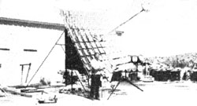
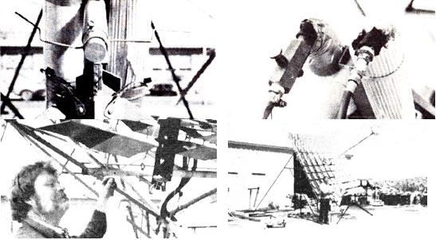
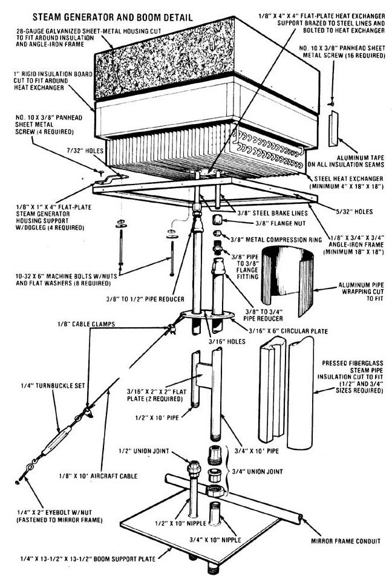

MOTHER NOS. 55 and 56 showed you how to build a low-cost solar furnace frame and a sophisticated tracking system. Now it's time to put those components to work!
Bark in MOTHER NO. 52 we featured a solar furnace designed and built by a fellow named Charles Curnutt out in Twentynine Palms, California. It seems that Mr. Curnutt had not only come up with an apparatus that captured the sun's energy and made it work for him, but he had done so for a total investment of only several hundred dollars. This meant that, for the first time, energy self-sufficiency was available on the "little guy's" level ... and that a small back yard-or even a rooftop-would provide enough space to house a genuine home powerplant!
Then-as if just inventing the furnace hadn't been enough-Charles granted MOTHER permission to copy and modify his design, and make it available to her entire readership ... which is exactly what she's been doing. MOTHER NO. 55 included an article on how to build the inexpensive sun-tracking system, and the following issue MOTHER NO. 56 detailed the frame construction process. Now we'll get on with the next phase: plumbing the furnace so it can be used to generate steam!
HOW IT WORKS
A steam generator (which is-in effect-a "simple" boiler) is mounted inside an insulated box and installed-on a boom made of pipe-about 10 feet above the mirror frame. Each of the one hundred 12" X 12" glass reflectors is then aimed directly at the boiler, creating a total reflective surface area of 100 square feet . . . enough (when concentrated on the 18" X 18" target) to create temperatures within the insulated steam generator housing in excess of 1,600 degrees Fahrenheit!
This intense heat then "flashes" the water (the liquid enters the serpentine boiler through one of its supporting sections of boom pipe) into steam, which in turn is forced out of the generator and through the remaining length of rigid conduit. Because the steam is under pressure (we achieved over 300 PSI during one test session), a check valve is necessary-on the "feed" side of the plumbing system-to prevent incoming water from being driven backward. This piece of hardware can be installed in the water line at any point between the control valve and the steam generator.
Click here for a downloadable image of the furnace plumbing system and rope drive system, a Mother's homebuilt bender, and a bill of materials (costs accurate in 1979).
GETTING STARTED
If you've been working right along on your own solar furnace, you already have most of the tools needed to complete the steam generator assembly detailed in this issue. The only additional pieces of equipment you'll need are a tube cutter and a pipe threader.
Begin by salvaging a steel heat exchanger assembly (don't use an aluminum unit, as it won't be able to withstand the high temperatures it's likely to encounter) from an older model refrigerator, air conditioner, heating system, or what have you. A heat exchanger is nothing more than a continuous length of tubing, formed into a series of compact loops and surrounded by parallel rows of lightweight metal fins ... which help to transfer thermal energy. The size of this component isn't critical, as long as it's at least 4" X 18" X 18".
Next, cut your length of 3/8" steel brake line in half and insert its severed ends-about 2-1/2" apart-between the fins of the heat exchanger so they pass through the device at its midpoint. Then bend the steel conduit's flared ends, as necessary, to meet the inlet and outlet tubes on the exchanger... and fasten these two pairs of pipe together with the flare nuts provided. With the brake lines secure, predrill the steam generator support plate as shown, then braze and bolt it to the exchanger assembly.
Once the above steps are completed, take the four 1/8" X 1" X 4" flat-plate steam generator housing supports and bend each of them into a "dogleg" shape, then drill a hole in both ends of each support and attach them to the corners of the exchanger assembly ... using the rest of your long bolts.
You can now fashion a sheet-metal cover to house the steam generator (be sure to allow an extra inch or so of clearance around all four sides and the top to accommodate the insulation). Then cut the rigid insulation board to the same dimensions as the inside of the housing-leaving it about 3/4" shy at the lower part of the box-and join the sections together with aluminum tape.
The next step is to weld together an angle-iron frame to support the insulated exchanger cover (remember that this "platform" will fit along the inner perimeter of the box), and drill the mounting-bolt holes through the cover and the frame. When this is done, remove the sheet-metal box and fasten the "dogleg" supports (with heat exchanger attached) to the upper lip of the angle with sheet metal screws. Finish your new "boiler" with several coats of high-temperature flat black paint, then install its housing and secure that cover to the frame with sheet metal screws.
PLUMBING IT UP
Cut your black pipe to the lengths rioted, then fasten the two 10' sections to the steam generator ... using the fittings as illustrated. Drill the four perimeter holes-and the two center openings-in your 3/16" X 6" circular plate, slip the disc over the two support pipes (to a point approximately 36 inches from the bottom of the "boiler"), and weld it in place. While you're welding, you can also fasten the two flat spacer plates-positioned 36 inches apart-to each section of Schedule 40 pipe.
With the boom completed, measure the distance (in inches) between the threaded tips of the two lengths of pipe on the lower portion of this piece of apparatus, then drill two holes in the boom support plate (placed far enough apart to correspond with the two pipes that make up the boom) and slip the two nipples through the metal plate as shown, taking care to "stagger" their lengths so the threaded ends will match up to the boom pipes evenly. Weld the nipples in place ... then take this opportunity to give the boom and the entire frame assembly a coat or two of rust-resistant paint.
While the paint is drying, cut your length of 1/8" cable into four 10' and four 8' lengths. Fasten the longer strands through the holes on the circular boom plate and the shorter sections around the boom pipes just above the central flatplate spacer ... using threaded cable clamps. Once that's done, the free ends of the guys can be looped through the turnbuckle bolts and clamped in place.
Now attach the eight eyebolts at equal distances around the mirror frame (one at each corner and one at the midpoint of every section of "perimeter" conduit) ... and temporarily secure the gimbal frame by tying it-in an upright position-firmly to the furnace's base.
In order to lift the steam-generator-and-boom assembly into place atop the mirror frame, you'll need the help of several people and a couple of long poles with nails driven into their ends. Just put the "spikes" through the loops in the mast's upper cables, then-while one person stands below the mirror frame and holds the lower end of the boom-have the others "man the poles" and lift the assembly into position. When the boom pipes touch the protruding lengths of nipple in the support plate, join the two sections together. At the same time, have someone else fasten the turnbuckle on each guy wire to the eyebolts in the mirror frame ... this will help hold the boom aloft. Finish this assembly by tightening the two union joints at the base of the mast and drawing all eight guy wires taut.
The remainder of the plumbing consists of two lengths of hydraulic hose, assorted elbows and fittings, a pressure gauge, and several sections of Schedule 40 pipe as shown. Of course, both the inlet and outlet tubes must be equipped with control valves to regulate water feed and steam output, and all piping on the furnace should be fully insulated to prevent unnecessary heat loss. When installing the pressure gauge, be sure to include a complete loop in the copper tubing-as illustrated-to protect the instrument from water damage.
Then, after you've pieced together the plumbing to and from the boom, cover it with insulation (you may have to cut this material into sections to make it fit properly) and tie the segments around the pipe with the metal strips provided. Next fasten the conduit-and-insulation assembly to the gimbal frame with several sections of hanger strap, and cover the hydratilic hoses with wired-in-place rubber pipe insulation.
THE FINAL TOUCHES
To offset the weight of the boom-and-steam-generator assembly, put a cinder block or two in the counterbalance tray below the gimbal frame (you might have to experiment to get the balance just right). With this ballast in place, hook the two helical springs together and fasten them through the eyebolt on one of the frame arms. When that's done, tie your drive rope to the free end of the spring, then thread the cord through the block pulley, between the idler wheels and around the drive pulley, and over to the eyebolt at the tip of the opposite mounting tripod. Pull the rope taut, and tie it to the ring
The next step is to fasten the two sunrise/sunset control switches onto the face of the small triangle that constitutes part of the furnace's base. To do this, attach-in a fixed horizontal position-the control arm and hub assembly (detailed in MOTHER NO. 55) to the gimbal frame's lower axle. Then cut two 3" lengths of perforated hanger strap bolt the switches to each section of metal "belt", and attach the straps to the angle-iron base ... positioning the switches about 1-1/2 inches below the ends of the control arms. With this type of arrangement, you can easily adjust the system by bending the hanger strap as required.
Once the control switches are installed to your satisfaction, mount the phototransistor switch housing, which was described in MOTHER NO. 55. Bend your 12" piece of shelf bracket into a right angle, and-using the holes predrilled in this metal channel-fasten the bracket to the threaded guy wire mount eyebolt in the front left-hand corner of the mirror frame. Now simply drill a couple of holes in the sheet-metal housing and attach the box to the upright section of shelf bracket with two small bolts.
POSITION THE MIRROR FRAME ...
Because the sun's position in the sky changes with the seasons, it's necessary to adjust the mirror frame on its axis every few weeks. To do this, stand below the boom mounting plate when the sun is at its zenith (at midday) and lengthen or shorten the elevation control chain as necessary ... while sighting down the length of the boom. When the steam generator housing blocks the sunlight's glare, the mirror frame is adjusted correctly (you could also check this "aim" by making sure the housing casts a shadow directly in the center of the mirror frame).
... INSTALL THE MIRRORS ...
Once the correct elevation has been determined, begin installing the mirrors. Slip each foot-square pane of reflective glass into its individual mount by spreading the two sheet-metal "fingers" apart, then-using the tool described in the accompanying sidebar-bend the short 1/4" stem on each mirror mount until its spot of reflected light strikes the underside of your heat exchanger squarely.
(It will be easier to mount and adjust the mirrors if you cut out about two dozen 12" X 12" cardboard blanks, and use them to cover the installed reflectors as you go. This way, only one mirror at a time will throw a spot of light on the boiler, and you'll be able to insure an accurate adjustment. When all your blanks have been used, merely remove them and cover the mounted reflectors with a couple of bedsheets. Then reinstall We cardboard squares on the next series of mirrors ... and so on till the entire job is completed. For your own safety, PLEASE wear protective dark glasses or goggles when making the above adjustments ... concentrated sunlight can easily damage your eyes!)
... AND YOU'RE READY TO GO!
Finally, install the furnace's water feed system (a garden hose-plumbed into the inlet side of the steam generatorwill do just fine). In our case, water pressure on the "in" side figured out to nearly 90 PSI ... which was about right for our needs. Of course, if you plan on running higher pressures in your own furnace (or if you want to operate a steam engine, and the water pressure in your area is a good deal lower than 90 PSI), you'll have to supplement your incoming "H2O punch" with an additional pump.
Now you're ready to give the tracking system a "dry run" before passing water through the plumbing. First, check to make sure all the electrical components are wired together correctly (according to the diagrams in MOTHER NO. 55), then remove the ropes that hold the mirror frame in an upright position.
Next, note-at noon-the position of the phototransistor switch housing ... to determine whether a shadow is being cast on the small nodular control itself (the shadow should just barely cover the switch to its edge). If shade doesn't fall on the eye as it should, bend the shelf bracket till the housing is in the optimum position, then connect your power lead to the storage battery.
As the day goes on, the gimbal frame should move in small increments from right to left (as you face it with the sun at your back) until late afternoon ... when the left-hand control arm will strike the sunset switch and reverse the motor to bring the entire frame-and-boiler assembly back to its original position, ready for the start of a new day. (Then, as the frame returns, the right-hand control arm will trigger the sunrise switch, shutting off the motor and setting its current flow back to normal.)
Since the hours of daylight will vary throughout the year, you'll have to adjust the position of the control arms to compensate for seasonal changes. As a rule, though, the sun can only provide substantial energy from one hour after sunrise to one hour before sunset, so-regardless of when you're calibrating your furnace's tracking system-tune in" the switches with this fact in mind.
When you're satisfied that the tracking system will operate without a hitch, it's time to give the furnace its first test. Close the steam outlet needle valve and crack open the fresh-water inlet control. This will allow the liquid to partially fill the "flash" chambers in the heat exchanger, where it will be vaporized. After a few minutes, open the steam control valve ... a steady stream of pressurized water vapor will burst from the outlet pipe, ready for whatever use you might care to put it to.
Like Charles Curnutt, MOTHER's research crew chose to run a steam engine with the free power available from the apparatus. Unfortunately, hunt as they might, the boys couldn't come up with a powerplant that was [1] large enough to drive an electrical generator, [2] efficient enough to make full use of the steam, and [3] costeffective. So-while continuing
|
 Left to right: Sunrise/sunset switches... inlet and outlet fittings... fastening phototransistor switch housing... the complete furnace. |
 Click here for a downloadable image of the steam generator and boom detail. |
 |